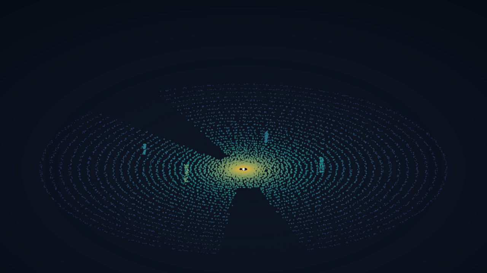
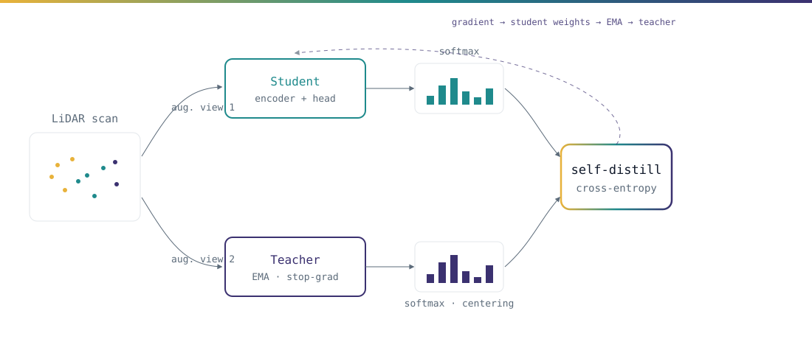

Self-supervised LiDAR representation learning
Vernata: Self-Supervised Learning of LiDAR Point Representations
1ETH Zürich 2Affiliation Two IROS 2026 · under review

A DINO-style student–teacher objective that learns transferable point features from unlabeled outdoor LiDAR, with no manual annotation.
Abstract
Learning from raw scans
Placeholder abstract. Outdoor LiDAR perception still leans heavily on large labeled datasets, which are costly to collect and annotate. Vernata adapts self-distillation with no labels (DINO) to sparse, range-varying point clouds, producing point-level representations that transfer across downstream tasks.
We pair a student and a momentum teacher over two augmented views of the same scan, and train the student to match the teacher's distribution. The resulting features improve label efficiency on semantic segmentation and detection, and remain robust across sensors and scenes. Replace this text with the final abstract.
Video
Overview
Method
A student–teacher objective for LiDAR

Placeholder method text. Given a single LiDAR sweep, we sample two augmented views via geometric and point-dropout transforms. The student encoder is trained by gradient descent; the teacher is an exponential moving average of the student, with a stop-gradient and output centering to prevent collapse.
The objective is a cross-entropy between the student and teacher distributions over a learned prototype set. Describe the encoder backbone, augmentation policy, and any LiDAR-specific design choices here.
Results
Qualitative results
Related links
Related work
There's a body of concurrent and related work this builds on. DINO introduced self-distillation with no labels. Add the relevant LiDAR self-supervision and point-cloud representation papers here as a short prose list.
BibTeX
Citation
@inproceedings{lemke2026vernata,
title = {Vernata: Self-Supervised Learning of LiDAR Point Representations},
author = {Lemke, Oliver and Two, Author and Three, Author and Four, Author},
booktitle = {IEEE/RSJ International Conference on Intelligent Robots and Systems (IROS)},
year = {2026},
note = {Under review}
}